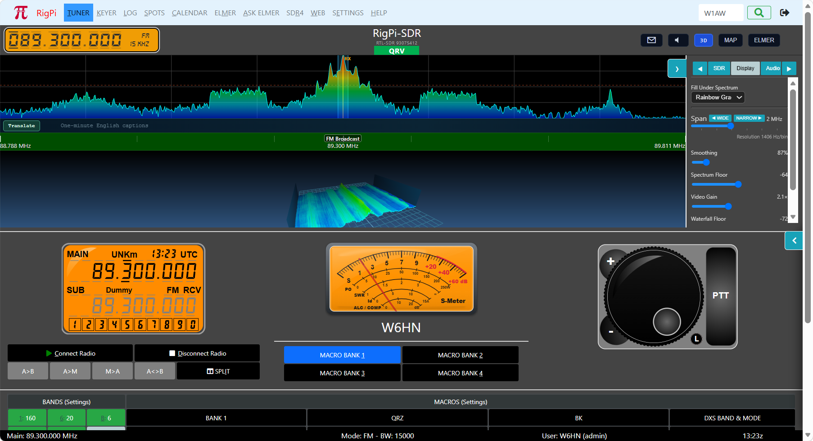

|
<< Click to Display Table of Contents >> Navigation: Views >
|

RigPi-SDR is an integrated software defined radio application built directly into the RigPi station management system. It transforms your RigPi into a full-featured SDR receiver/panadaptor, allowing you to visualize and listen to radio signals across a wide frequency range without leaving your browser.
RigPi-SDR connects to SDR hardware attached to your RigPi and streams real-time spectrum and audio directly to your web browser. Whether you're monitoring band conditions, listening to a CW pileup, or watching FT8 activity scroll down the waterfall, RigPi-SDR gives you a live window into the radio spectrum alongside your normal RigPi station controls.
RigPi-SDR supports a growing range of SDR hardware including the AirSpy HF+ Discovery, HackRF Pro (receive-only), RTL-SDR and Nooelec receivers, RX-888 MKII, all SDRplay devices except the original RSP, and remote SDR WikiSDR and OpenWebRX sources. Hardware is selected and configured by the station administrator, making it immediately available to all users without individual setup.
RX-888 firmware loading is automatic. The RX-888 MKII uses volatile firmware that disappears whenever receiver power is removed. RigPi detects the RX-888 bootloader and reloads the supplied firmware automatically during RigPi startup, before an SDR service starts, and whenever the receiver is connected by USB. An already-running RX-888 is left unchanged. No separate firmware command or desktop application is required.
RX-888 connection: Use a direct, high-quality USB 3 connection for wideband operation. If the USB cable is removed or receiver power is interrupted, RigPi waits for reconnection, reloads the firmware, and resumes the RX-888 stream automatically; restarting the SDR server is not required. Allow approximately 5–15 seconds after reconnecting. A persistent failure is recorded by the rigpi-rx888-firmware service for technical support. A Raspberry Pi 5 is required to handle the high sampling rate of the RX-888.
HackRF Pro (receive-only): Connect the receiver by USB, open the SDR device selector, and choose the entry labeled HackRF Pro. RigPi uses a stable 2 MS/s default, moderate receive gain, no AGC, and antenna bias off. Increase RX Gain only as needed. HackRF Pro is receive-only in RigPi-SDR. Transmit code may remain for future development, but it is intentionally not exposed or supported at this time.
Spectrum Display and Waterfall The split display shows a real-time spectrum analyzer on top and a scrolling waterfall below. Signal strength is color-coded with selections for palette, giving you an instant picture of band activity. The waterfall floor and spectrum floor levels are independently adjustable to optimize the display for your noise environment.
3D Waterfall Click the 3D button to replace the normal waterfall with a three-dimensional ribbon. Frequency runs left to right, signal strength controls peak height, and time recedes into the background. Drag with a mouse or trackpad to rotate and tilt; Shift+drag vertically to move the viewing target; and scroll to zoom. On a touchscreen, drag with one finger to rotate, drag with two fingers to move vertically, and pinch to zoom. Click 3D again to return to the normal waterfall.
Integrated with RigPi RigPi-SDR embeds directly into the RigPi tuner and keyer pages. The SDR panel can be positioned at the top, middle, or bottom of the page, or disabled entirely. Each user can configure whether the SDR appears on the tuner page, the keyer page, or both.
Multi-mode Demodulation RigPi-SDR demodulates audio for USB, LSB, CW, CWR, AM, FM, PKTUSB, FT8 and FT4 (both with decoding), RTTY, and wideband FM. Audio is delivered directly through your browser for low-latency listening. The audio level, bandwidth, and AGC are all adjustable in real time.
Memory Panel and Scanner Twenty memory slots store frequency, mode, and bandwidth settings. A built-in scanner steps through selected memories with adjustable dwell time, and automatically holds on a frequency when the squelch opens.
Per-User Settings Each RigPi user gets their own SDR settings profile — frequency, mode, bandwidth, waterfall palette, memories, and display preferences are saved individually and restored automatically at login.
Visitor Notifications The station administrator can receive an instant Pushover notification whenever a user logs into or out of RigPi, including the user's callsign, login time, and IP address.
Note: ELMER requires a supported SDR device or remote OpenWebRx/KiwiSDR connected to the Raspberry Pi 5. See the RigPi 5 hardware guide for supported devices.
ELMER opens automatically within the RigPi interface. It can also be accessed directly in a browser:
http://rigpi5.local:8001 — for example, AirSpy HF+ (primary SDR)
http://rigpi5.local:8002 — for example, RTL-SDR
https://<Cloudflare URL> — Remote access via Cloudflare Tunnel
Device |
Coverage |
Host connection |
AirSpy HF+ |
9 kHz – 31 MHz, 60–260 MHz |
USB 2 |
RTL-SDR |
HF (direct sampling), VHF/UHF |
USB 2 |
Nooelec NESDR SMArt v5 |
HF by direct sampling; VHF/UHF |
USB 2 |
SDRplay RSP family (except original RSP) |
1 kHz – 2 GHz |
USB 2 through SDRconnect; nRSP-ST uses Ethernet or Wi-Fi |
RX-888 MKII |
10 kHz–64 MHz direct HF; tuner to about 1.8 GHz |
USB 3 (Raspberry Pi 5 required) |
HackRF Pro (receive-only) |
100 kHz–6 GHz operating range |
USB 2; receive-only in RigPi-SDR |
KiwiSDR / OpenWebRX |
Worldwide remote receivers |
Remote tab |
The figures below are useful for choosing an SDR. Maximum sample rate and spectrum width are hardware capabilities; the practical setting may be lower depending on the receiver, driver, USB connection, and Raspberry Pi workload. A Raspberry Pi 5 is strongly recommended for wideband devices, especially the RX-888 MKII.
Airspy HF+ on Raspberry Pi 4: Use a sample rate of 456 kHz as the recommended starting point for reliable audio. Higher rates, including 768 and 912 kHz, can cause intermittent audio dropouts on Pi 4. They remain selectable; reduce the sample rate if audio cuts out. Raspberry Pi 5 handled 912 kHz without dropouts in our testing. Keep the Pi adequately cooled.
Device |
Frequency coverage |
Best suited for |
Approx. price |
|
0.5 kHz–31 MHz; 64–260 MHz |
18-bit internal DDC; 768 kS/s IQ; about 660 kHz usable spectrum; USB 2 |
High-dynamic-range HF and weak-signal reception |
About $169 |
|
RTL-SDR Blog V4 and compatible RTL-SDR devices |
V4: about 0.5 MHz–1.766 GHz; other models vary. Many RTL-SDR models/installations require an HF upconverter such as Ham It Up. |
8-bit; 2.56 MS/s stable (up to about 3.2 MS/s with possible dropped samples); USB 2 |
Lowest-cost FM and VHF/UHF reception. Supported direct-sampling models can receive HF; an upconverter usually gives better HF performance. |
About $30–$50 |
About 0.1 MHz–1.75 GHz |
8-bit RTL2832U; up to about 3.2 MS/s; native HF direct sampling; USB 2 |
Compact HF/VHF/UHF receiver. No upconverter is required for HF, although one can improve HF performance. |
About $52 |
|
10 kHz–64 MHz direct-sampling HF; tuner coverage to about 1.8 GHz |
16-bit, 130 MS/s ADC; up to 64 MHz streamed; USB 3 required for wideband operation |
Very-wideband HF monitoring and viewing most of the HF spectrum at once |
About $170–$220 |
|
100 kHz–6 GHz operating range; tuning extends beyond that range with reduced performance |
8-bit I/Q; up to 20 MS/s hardware capability; RigPi defaults to a stable 2 MS/s spectrum; USB 2 Type-C |
Very-wide tuning coverage, experimentation, and HF-through-microwave spectrum reception. RigPi exposes HackRF reception only in this release; transmit is intentionally not exposed or supported. |
About $500 |
|
SDRplay RSP family through SDRconnect; all SDRplay receivers except the original RSP are supported |
Model-dependent; current models generally cover 1 kHz–2 GHz continuously |
Model-dependent; current models provide 14-bit conversion and up to 10 MHz spectrum view. USB RSP models use USB 2; nRSP-ST uses Ethernet or Wi-Fi. |
Choose RSP1B for general use, RSPdxR2 for enhanced LF/MW/HF, or RSPduo for dual-tuner/diversity operation. Separate rows are unnecessary because RigPi uses the same SDRconnect interface. |
USB models about $130–$292; nRSP-ST about $500–$520; plus tax/shipping |
Remote KiwiSDR / OpenWebRX |
Depends on the remote receiver |
Depends on the remote server and network stream; Ethernet/Wi-Fi |
Worldwide reception without local SDR hardware |
Directory-listed public receivers are normally free; private, club, or hosted access may require membership or payment |
Prices are approximate U.S. manufacturer or street prices checked in August 2026. Availability, taxes, shipping, and prices vary. RX-888 buyers should use a reputable source; the manufacturer warns that counterfeit units exist.
Audio hardware note: The original MFJ RigPi Audio board is not required by RigPi-SDR. SDR receive audio is generated digitally and delivered directly to the browser. For transmit audio, use the radio's USB audio CODEC or a supported external USB audio interface. Legacy Mumble instructions do not apply to current RigPi 5 browser audio.
The large LED-style frequency display shows the current tuned frequency. The current mode (USB, CW, FT8, etc.) and bandwidth are shown alongside the digits.
•Click a digit to select the tuning resolution. The selected digit determines the size of each tuning step.
•Shift+scroll tunes up or down by the selected digit's step size.
•Mouse scroll without Shift changes the spectrum zoom.
•Normal SDR tuning takes effect immediately. Operator confirmation is requested only when a radio change is initiated through Elmer Control.
Split operation uses one frequency for receiving and a second frequency for transmitting. When split is on, the frequency panel shows smaller RX and TX readouts so both frequencies remain visible without enlarging the panel substantially.
Left-click the spectrum or waterfall to set the main receive frequency.
Right-click the spectrum or waterfall to set the split transmit frequency.
The normal orange marker shows the receive frequency. A contrasting split marker shows the transmit frequency
Mode and bandwidth changes apply to both VFOs
Use the normal RigPi split control to turn split on or off.
Elmer Control also accepts commands such as Split up 5 kHz, Split down 2 kHz, and Split off.
Before transmitting: Verify the TX readout, split marker, mode, bandwidth, antenna, and operating privileges. A shared-radio guest may be asked to obtain the controlling operator's approval before changing split.
The main display shows a real-time spectrum (top) and scrolling waterfall (bottom). The waterfall provides a history of signals over time.
•Click on the spectrum or waterfall to tune to that frequency
•Drag the bandwidth handles to adjust the filter width
•Scroll over the spectrum to zoom the displayed span
•MAP button overlays a world map with grayline and DX spot pins
•Side panel provides tabs for SDR settings
Click the 3D button above the display to replace the normal two-dimensional waterfall with a three-dimensional ribbon. Frequency runs from left to right, signal strength forms the height of each peak, and time recedes into the background. The newest spectrum row is at the front. Click 3D again to return to the normal waterfall.
•Drag with the mouse or trackpad to rotate and tilt the view.
•Shift+drag vertically to move the camera's viewing target up or down.
•Scroll over the 3D waterfall to zoom the camera in or out.
•On a touchscreen, drag with one finger to rotate and tilt.
•On a touchscreen, drag with two fingers to move the view vertically and pinch to zoom.
The 3D view uses the selected waterfall palette and floor setting. RigPi remembers the 3D selection separately for each user and SDR panel. The 3D waterfall and MAP view cannot be displayed at the same time.
Performance: The 3D waterfall uses additional browser graphics and RigPi resources. If audio becomes choppy or the display is sluggish, return to the normal waterfall, close duplicate SDR tabs, or reduce other processing. A Raspberry Pi 5 is strongly recommended.
RigPi-SDR includes built-in receive decoding for both FT8 and FT4. External WSJT-X software is not required simply to confirm or monitor either mode in RigPi-SDR.
Open the FT8 side-panel tab and use the Decoder selector:
•Auto selects FT8 or FT4 near configured activity frequencies.
•FT8 forces FT8 decoding at the current dial frequency.
•FT4 forces FT4 decoding at the current dial frequency.
•Off stops the decoder.
Decoded messages appear in the panel with time, SNR, DX call, transmitting station, grid, band, and message. To test a signal that looks like FT4, tune it, select FT4, and watch for decodes over several FT4 transmit intervals.
Band pills across the top row tune quickly to band memories. Each pill has three colored dots indicating memory slot activity:
Blue dot — digital mode slot (FT8, PSK, RTTY)
White dot — CW slot
Green dot — phone slot (SSB/AM)
Click a band pill to cycle through its three memory slots. Each slot stores frequency, mode, and bandwidth.
Mode pills select the demodulation mode: USB, LSB, USB-D (digital), CW, CWR, AM, NFM, WFM. The active mode is highlighted.
Start here: Current RigPi audio plays directly in your browser. You do not need Mumble or Plumble. Open the SDR side panel, select Audio, and click Start Audio. Use headphones while testing transmit audio to prevent feedback.
Path |
Signal flow |
Receive |
SDR or radio audio → RigPi → browser → computer, phone, or tablet speaker/headset |
Transmit |
Browser microphone → RigPi → selected radio USB audio CODEC → radio transmit-audio input |
Digital programs |
SDR audio → ALSA Loopback → WSJT-X, Fldigi, or another program running on RigPi |
1.Connect the SDR and confirm that signals appear in the spectrum or waterfall.
2.Select the correct frequency, mode, and bandwidth. A strong signal heard with the wrong mode may sound distorted or may seem silent.
3.Open the SDR side panel and select Audio.
4.Choose RX Audio: SDR to hear the SDR demodulator. Choose RX Audio: Radio to hear the connected receiver's audio through its USB audio CODEC, then select the correct Pi ALSA radio input.
5.Before starting audio, turn down the computer, phone, tablet, headphones, or powered speakers. Click Start Audio. Browsers require this click before they permit a page to play sound..Begin with the RigPi Level low—about 10–20%—and select C for centered audio. Increase the RigPi and device volumes gradually to a comfortable level. Do not begin near 100%, especially when using headphones.
6.Confirm that the green audio indicator and VU meter respond. SCOPE/FFT changes only the audio display; it does not change the sound.
What the RX Audio switch changes: It changes only the sound sent to this user's browser. It does not change SDR spectrum or waterfall operation, radio tuning, PTT, or the selected transmit-audio output. The selection is saved for the signed-in account.
Applies everywhere: The same Audio panel is used in the full SDR window and when SDR is embedded in the Tuner or Keyer window. Audio preferences are stored for the signed-in RigPi user and browser.
Transmit audio requires a radio audio interface in addition to CAT control. A single USB cable can provide both CAT and audio on many radios, but the radio must be configured to use its USB or data input when transmitting.
1.Connect the radio USB audio interface and verify that its device appears under TX Output (Radio CODEC). Device names commonly contain CODEC or the radio model.
2.Select the radio CODEC—not the Raspberry Pi speaker output and not an SDR receive-only device.
3.Allow microphone access if the browser asks. Microphone permission is stored separately for each browser and RigPi address. Remote microphone access requires the secure https:// RigPi address.
Chrome local-LAN microphone override: HTTPS is preferred. If Chrome blocks the microphone on a trusted local RigPi address, open chrome://flags/#unsafely-treat-insecure-origin-as-secure. Enable Insecure origins treated as secure, enter the complete origin—normally http://rigpi5.local—and relaunch Chrome. Include an explicit port when one is used. Reopen RigPi and grant microphone permission. This exception does not encrypt HTTP and must not replace HTTPS for remote access.
4.Begin with a low TX Level. While speaking normally, increase it until the TX VU meter responds without frequently reaching the red clip indicator.
5.Use a dummy load or minimum safe power for the first test. Confirm PTT separately, then confirm modulation. Set the radio's USB/data input level as needed.
Transmit safety: Selecting an audio device does not authorize transmission. Check the frequency, antenna or dummy load, power, and radio input selection before pressing PTT. Stop immediately if the radio remains keyed or the TX meter shows excessive drive.
Click Start Audio in the Audio tab to begin streaming demodulated audio directly to your browser.
Control |
Function |
Level slider |
Output volume (0–200%) |
L / C / R buttons |
Stereo pan: hard left, center, or hard right. This lets you monitor two SDR devices—or one device tuned to two frequencies—with one signal in each ear. Select L for the first audio stream and R for the second. Select C when listening to one stream in both ears. |
VU meter |
Real-time audio level display with peak hold |
Scope |
Oscilloscope display of the audio waveform |
FFT |
Audio frequency spectrum display |
TX Output |
Select ALSA device for transmit audio |
Note: Browser audio requires a current browser. The TX Output device selection persists across sessions.
Symptom |
What to check |
No sound and no VU movement |
Click Start Audio; confirm the SDR is connected; tune a visible signal; select the correct mode and bandwidth; reload the page if the audio indicator does not turn green. |
VU meter moves but nothing is heard |
Raise Level; select C; check the computer or mobile-device volume; make sure the RigPi browser tab and site are not muted; disconnect an unintended Bluetooth audio device. |
Audio is choppy or delayed |
Use a wired network when practical; close duplicate RigPi/SDR tabs; reduce other SDR processing such as 3D waterfall or decoding; confirm adequate Raspberry Pi resources. Raspberry Pi 5 is strongly recommended. |
Works locally but not remotely |
Use the configured secure DuckDNS or Cloudflare https:// address; reload after granting site permissions; verify that remote access and the SDR instance are connected. |
Radio keys but has no modulation |
Select the correct TX Output CODEC; confirm browser microphone permission; configure the radio to use USB/data audio rather than its front-panel microphone; then raise TX Level gradually. |
Transmit audio is distorted |
Reduce TX Level and the radio USB input gain. Avoid red clipping on the TX VU meter and avoid excessive ALC indication on the radio. |
Echo or feedback |
Use a headset; close duplicate audio sessions; move speakers away from the microphone; stop receive audio temporarily while diagnosing the transmit path. |
Still no audio? Test one path at a time: visible SDR signal, receive VU, browser sound, microphone permission, TX VU, radio CODEC, PTT, and finally on-air modulation. This isolates the failing step and avoids changing several unrelated settings at once.
Tab |
Function |
SDR |
Device selection, gain, AGC, bias tee, LO offset, device args, sample rate |
Display |
Waterfall palette, floor levels, smoothing, 3D waterfall |
Audio |
Start/stop audio streaming, volume, pan, VU/scope/FFT |
Remote |
Connect to worldwide KiwiSDR and OpenWebRX receivers |
Rig |
Transceiver frequency synchronization |
ELMER |
AI assistant, Workability Index, signal check |
The Device Args field passes additional parameters to the SoapySDR driver. For RTL-SDR HF reception enter direct_samp=2 (high HF) or direct_samp=1. Settings take effect on the next device connect.
When connected to the RigPi spot manager, active DX spots appear as colored tags on the spectrum display. Click any tag to tune to that frequency. The ELMER Workability Index opens automatically for the spotted station.
In MAP mode, spots appear as pins on the world map. The map includes:
Live grayline (solar terminator) shading
Your QTH marker
DX spot pins with click-to-tune
Remote SDR receiver pins (KiwiSDR / OpenWebRX)
The Workability Index assesses the probability of completing a QSO with a specific DX station on a selected band, based on multiple real-time data sources.
1.Click a DX spot on the spectrum or map — the callsign fills automatically
2.Or type any callsign in the Enter call box and press Enter
3.Select the desired band from the band selector
4.ELMER fetches data from multiple sources and displays the score
Tip: Changing the band selector automatically retunes the SDR to that band and re-runs the Workability Index.
Factor |
Weight |
Data Source |
PSKReporter activity |
20% |
PSKReporter.info — who is hearing the DX right now |
Band / MUF |
18% |
Solar flux + path distance formula |
Grayline alignment |
15% |
Calculated from UTC time and path coordinates |
Solar conditions |
15% |
NOAA SWPC — SFI and K-index |
ARRL DX Bulletin |
12% |
Weekly bulletin — confirms DXpedition active |
Antenna alignment |
10% |
Rotor azimuth vs. short/long path bearing |
Cluster activity |
10% |
Recent spot count for this entity |
Score |
Grade |
Meaning |
75–100% |
Excellent |
Strong likelihood of completing QSO |
55–74% |
Good |
Worth trying — conditions favorable |
35–54% |
Fair |
Marginal — try at suggested times |
20–34% |
Poor |
Unlikely but band changes may help |
<20% |
Unlikely |
Conditions not currently favorable |
Score gauge — circular gauge with color coding
Narrative — plain-English assessment with specific recommendations
Path info — short path and long path bearings, distance in Megameters and km
Solar conditions — SFI (Solar Flux Index) and K-index
Contributing factors — bar chart showing each factor's score and detail
QRZ lookup — operator name, location, photo, confirmation methods
LoTW status — whether station is in the Logbook of the World user list (230,000+ calls)
DXSummit activity — typical operating hours and bands based on recent spots
Signal check — real-time SDR detection at the spot frequency
Log history — your previous QSOs with this station and confirmation status
Award needs — DXCC, WAC, WAZ, WAS status for this entity
Upcoming contests — relevant contests in the next 7 days (WA7BNM calendar)
Click Copy / View to open a formatted report in a new window with Courier New monospace font. Use Select All (Cmd+A or Ctrl+A) and Copy to paste into email, log notes, or a text document.
If a rotor is connected, ELMER reads its current azimuth from RigPi and includes rotation instructions in the narrative: "Rotor is at 45° — rotate to 97° for short path to C5D."
The Remote tab connects ELMER to worldwide KiwiSDR and OpenWebRX receivers — over 1,300 receivers in the database.
1.Click Find Remote Hosts to load the receiver database
2.Enable MAP mode to see receiver pins on the world map
3.Click a map pin to connect to that receiver
4.Or type a hostname directly (e.g. sdr.k9mq.com:8073) and click Connect
When connected to a remote receiver, the local SDR pauses and the remote spectrum and waterfall are displayed.
When a transceiver is connected via RigPi, ELMER stays synchronized bidirectionally:
Tuning on the SDR updates the transceiver frequency via CAT
Transceiver VFO changes update the SDR display
Mode changes are synchronized
Up to 4 users can connect to ELMER simultaneously. Each user has:
Independent display center frequency and span (virtual slice)
Independent mode, bandwidth, and filter settings
Independent band memories and squelch
Settings saved automatically per user
The envelope button ( ✉ ) in the top bar opens the messaging panel. Admin can broadcast messages to all users or a specific user. Non-admin users can send messages to admin.
Red toast — Alert (manual dismiss)
Cyan toast — Info (auto-dismiss 10 seconds)
Green toast — Message (auto-dismiss 20 seconds)
Best HF sensitivity — Use an AirSpy HF+
RTL-SDR HF — Set Device Args to direct_samp=2 for HF frequencies
Grayline — Enable MAP mode to see the solar terminator; paths crossing the terminator have the best propagation
Workability timing — Check WI (Workability Index) before calling; the narrative suggests the best time window
LoTW before working — WI shows whether the DX station uses LoTW, saving wasted QSO time
Band memories — Each band has 3 slots (digital/CW/phone). Click the band pill to cycle through them
Signal check — The automatic signal check tells you if there’s actually a signal at the spot frequency before you call
Remote access — Use https://<Cloudflare URL> for full clipboard support in the Workability report
RigPi-SDR — Copyright © 2026 Howard Nurse, W6HN. Developed with AI assistance. Licensed under the MIT License.